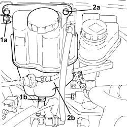
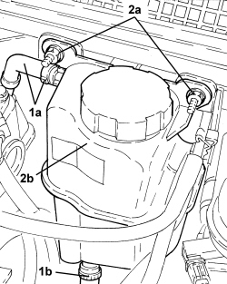
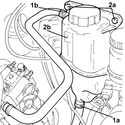

1088B10 ENGINE COOLANT SUPPLY RESERVOIR - R.R.
- Path
- Procedures > 10 ENGINE > 1088 ENGINE COOLING > 1088B ENGINE COOLING RADIATOR > 1088B10 ENGINE COOLANT SUPPLY RESERVOIR - R.R.
- Kind
- repair procedure (removal / refitting; the operation number is the code)
- Applies to
- all engines; all production periods
- Interactive page
- https://sloeber94.github.io/elrnDB-aBrrSpdr/en/#/946002001
Applies to: engines: 2.2 JTS; all production periods
 Removing
Removing
 Refitting
RefittingOp. 0010T20 ENGINE COOLANT - CHANGE
1. Loosen the bands, disconnect the degassing pipe (1a) and the system supply pipe (1b).
2. Undo the nuts (2a) and remove the engine coolant supply reservoir (2b).

Applies to: engines: 2.2 JTS; all production periods
Refitting
Removing- Fit the engine cooling radiator in place and secure it using the bolts.
- Connect the system supply and degassign pipes and secure them using the bands.
Applies to: engines: 3.2 JTS; all production periods
Removing
RefittingOp. 0010T20 ENGINE COOLANT - CHANGE
1. Loosen the bands, disconnect the degassing pipe (1a) and the system supply pipe (1b).
2. Undo the nuts (2a) and remove the engine coolant supply reservoir (2b).

Applies to: engines: 3.2 JTS; all production periods
Refitting
Removing- Place the engine coolant supply reservoir back in its housing and secure it using the nuts.
- Connect the degasing pipe and the system supply pipe and tighten the bands.
Applies to: engines: 2.4 JTD 20v; all production periods
Removing
RefittingOp. 0010T20 ENGINE COOLANT - CHANGE
1. Loosen the bands and disconnect the system supply pipe (1a) and the degassing pipe (1b).
2. Undo the bolts (2a) and remove the engine coolant supply reservoir.

Applies to: engines: 2.4 JTD 20v; all production periods
Refitting
Removing- Fit the engine cooling supply reservoir in place and secure it using the bolts.
- Connect the degassing pipe and the system supply pipe and tighten the bands.